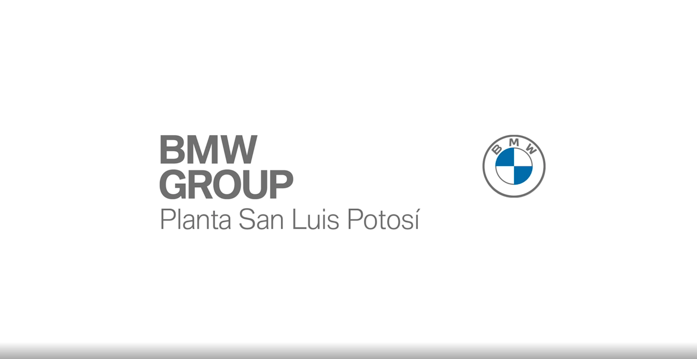
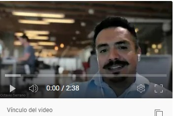
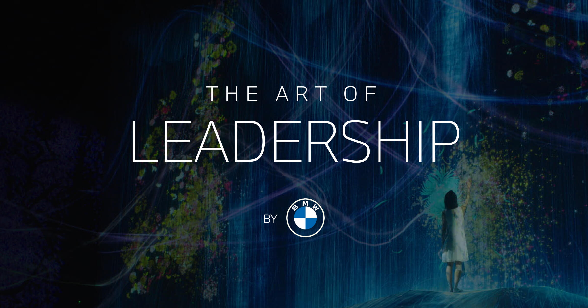
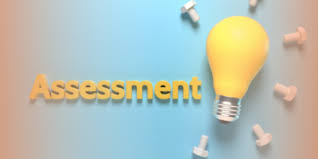
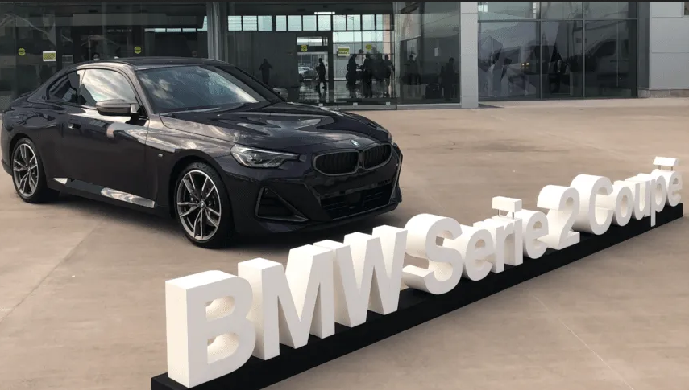
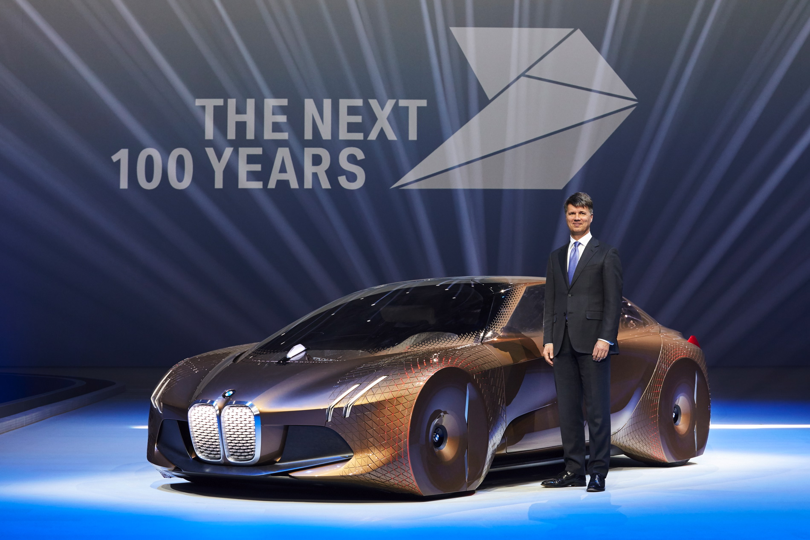

As Digital Quality Systems Process Leader you will be responsible to ensure the proper functioning and availability of the quality systems in BMW(Internal Quality Database, Digital Quality Assurance, System Traceability, Digital Visual Aids and Digitalized Reporting) to support assembly production at SLP. Lead the DQS technicians for attention of the daily requirements, guarantee the production flow and contribute to the stability of plant indicators and ensure the correct use of the systems. As Digital Quality Systems Process Leader, you will ensure systems and team adherence to assembly processes, lead strategies and projects for continuous improvement of systems tools and maintain a sustainable network with stakeholders within the BMW group.
Bachelor’s degree in Mechatronics, Computer Engineering or related field of study with intermediate knowledge on applications development and programming languages.
3+ years of experience in the Automotive Industry.
Knowledge in data engineering (SQL)
data analytics & data visualization (Power BI)
And driving the innovation.
Experience in CAQ (Computer Aided Quality) systems, leading projects, predictive analysis and understanding of complex interdependencies.
Teamwork, leadership, good communication and problem-solving skills.
Team administration
Fluent business English.
First statement
Ensure the proper functioning and availability of the quality systems in BMW
to support assembly production at SLP

-Internal Quality Database
-Digital Quality Assurance
-System Traceability
-Digital Visual Aids and Digitalized Reporting
How Ensure Internal Quality Database & Digital Quality Assurance?

-The communication and the attention to the detail are vital.
-A communication plan are required to handle with all stakeholders and also defined the correct communication channels.
-Adjust or modify the data model in order to guarantee an efficient System Traceability.
-Development with Power BI
Second statement
Lead the DQS technicians for attention of the daily requirements.

-Guarantee the production flow
-Contribute to the stability of plant indicators.
-Ensure the correct use of the systems.

To guarantee the attention of the daily requirements is necessary to review the current plan or the current routines that the technicians have already assigned, if it is existing.
My opinion a god system, team or project always should calculate together time, tasks and budged these three aspects are always interrelated with each other. To manage healthy team or project is necessarily make an assessment to discover the real situation.
• A god evaluation of the technical skills of the team members.
• An estimate of the complexity of the tasks.
• Evaluate if it’s necessary adjust the scope, time or the budged.
Third statement
Lead strategies and projects for continuous improvement of systems tools and maintain a sustainable network with stakeholders

-Ensure systems and team adherence to assembly processes.
-Lead strategies and projects for continuous improvement of systems tools.
-Maintain a sustainable network with stakeholders within the BMW group.
